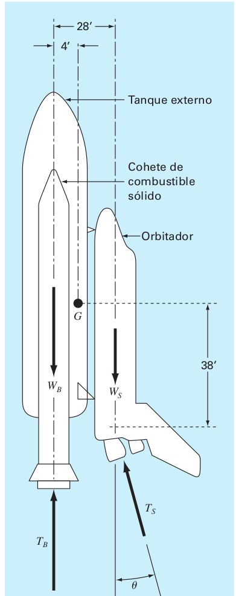

Transborador espacial
Sobre el trasbordador espacial, al despegar de la plataforma, actúan cuatro fuerzas, las que se muestran en el diagrama de cuerpo libre (véase la figura). El peso combinado de los dos cohetes de combustible sólido y del tanque exterior de este, es de \(W_B = 1.663\times 10^6 lb\). El peso del orbitador con carga completa es de \(W_S = 0.23\times 10^6 lb\). El empuje combinado de los dos cohetes de combustible sólido es \(T_B = 5.30\times 10^6 lb\). El empuje combinado de los tres motores de combustible líquido del orbitador es de \(T_S = 1.125\times 10^6 lb\).
Al despegar, el empuje del motor del orbitador se dirige con un ángulo \(\theta\) para hacer que el momento resultante que actúa sobre el conjunto de la nave (tanque exterior, cohetes de combustible sólido y orbitador) sea igual a cero. Con el momento resultante igual a cero, la nave no giraría sobre su centro de gravedad \(G\) al despegar. Con estas fuerzas, la nave experimentará una fuerza resultante con componentes en dirección vertical y horizontal. La componente vertical de la fuerza resultante, es la que permite que la nave despegue de la plataforma y vuele verticalmente. La componente horizontal de la fuerza resultante hace que la nave vuele en forma horizontal. El momento resultante que actúa sobre la nave será igual a cero cuando \(\theta\) se ajusta al valor apropiado. Si este ángulo no se ajusta en forma adecuada y hubiera algún momento que actuara sobre la nave, ésta tendería a girar alrededor de su centro de gravedad.

Resuelva el empuje del orbitador \(T_S\) en las componentes horizontal y vertical, y después sume los momentos respecto del punto \(G\), centro de gravedad de la nave. Iguale a cero la ecuación del momento resultante. Ahora, ésta puede resolverse para el valor de \(\theta\) que se requiere durante el despegue.
Obtenga una ecuación para el momento resultante que actúa sobre la nave en términos del ángulo \(\theta\). Grafique el momento resultante como función del ángulo \(\theta\) en el rango de –5 radianes a +5 radianes.
Escriba un programa de computadora para resolver para el ángulo \(\theta\) por medio del método de Newton para encontrar la raíz de la ecuación del momento resultante. Con el empleo de la gráfica, elija un valor inicial para la raíz de interés. Interrumpa las iteraciones cuando el valor de \(\theta\) ya no mejore con cinco cifras significativas.
Repita el programa para el peso de la carga mínima del orbitador, que es \(W_S = 195 000 lb.\)